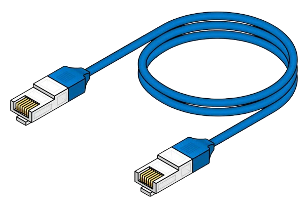
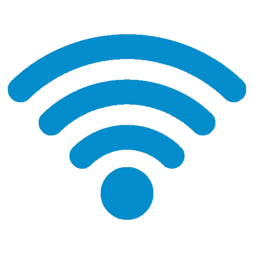
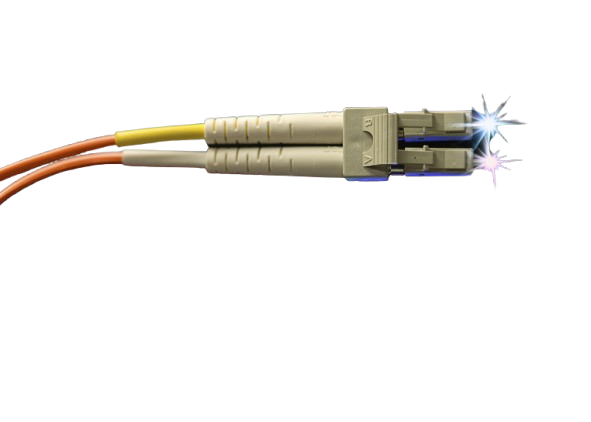
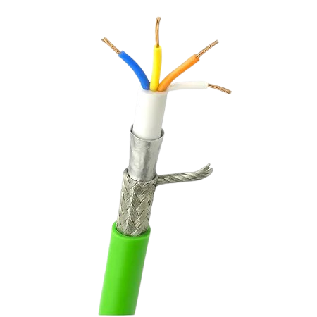
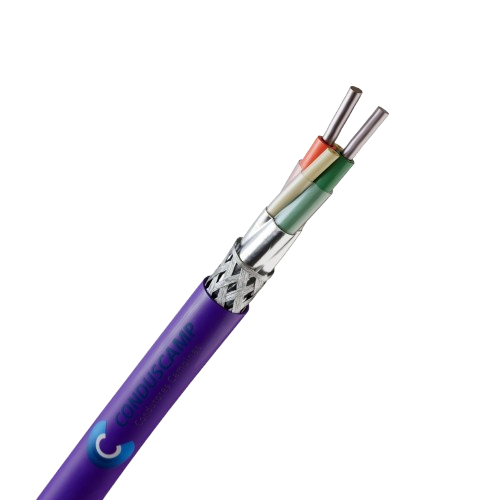
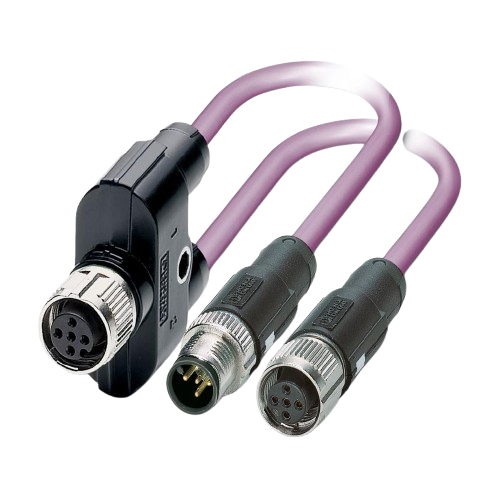

A Ethernet é uma das tecnologias de comunicação mais utilizadas em redes de computadores. Ela permite conectar computadores, impressoras, servidores e outros equipamentos por meio de cabos. - Cabeamento: cabos de par trançado, como Cat5e e Cat6, ou fibra óptica. - Conector: RJ45 (mais precisamente, conector 8P8C). - Topologia: principalmente estrela. - Transmissão: sinais elétricos ou ópticos. - Velocidade: 10 Mbps, 100 Mbps, 1 Gbps e velocidades superiores. - Distância: normalmente até 100 metros por segmento de cabo de par trançado. - Aplicação: empresas, escolas, escritórios e indústrias. Exemplo prático: em uma empresa, vários computadores são conectados a um switch Ethernet para compartilhar informações e acessar servidores.

O Wi-Fi é uma tecnologia que permite conectar dispositivos à rede sem precisar utilizar cabos de comunicação. Ele utiliza ondas de rádio para transmitir informações. - Cabeamento: não utiliza cabo para conectar os dispositivos finais; o ponto de acesso pode ser conectado à rede por Ethernet. - Conectores: não possui conector físico de rede para a comunicação sem fio. - Topologia: geralmente estrela, com dispositivos conectados a um ponto de acesso. - Transmissão: ondas de rádio. - Velocidade: varia conforme o padrão utilizado, como Wi-Fi 5, 6 e 7. - Distância: depende do ambiente, obstáculos e potência do equipamento. - Aplicação: celulares, notebooks, tablets e equipamentos inteligentes. Exemplo prático: quando um celular se conecta ao roteador de uma casa, está utilizando uma rede Wi-Fi.

A fibra óptica é um meio de transmissão que utiliza pulsos de luz para transportar informações. Ela é muito utilizada quando é necessário transmitir grandes quantidades de dados a longas distâncias. Existem dois tipos principais: - Multimodo: utilizada principalmente em distâncias menores, como dentro de prédios e centros de dados. - Monomodo: indicada para distâncias maiores, como conexões entre cidades e grandes instalações. Características: - Cabeamento: fibras de vidro ou plástico, dependendo do tipo. - Conectores: LC, SC e ST. - Topologia: estrela, anel e outras configurações. - Transmissão: pulsos de luz. - Velocidade: pode alcançar vários Gbps ou mais. - Distância: depende do tipo de fibra e dos equipamentos utilizados. - Vantagem: possui alta capacidade de transmissão e imunidade a interferências eletromagnéticas. Exemplo prático: a internet de fibra óptica utilizada nas residências e empresas.

As redes industriais são responsáveis pela comunicação entre equipamentos de automação. Cada tecnologia possui características próprias de velocidade, cabeamento, distância e aplicação.
O PROFINET é um protocolo industrial baseado em Ethernet. Ele permite a comunicação entre CLPs, sensores, inversores de frequência e outros equipamentos. - Cabeamento: par trançado industrial e fibra óptica. - Conectores: RJ45 e M12. - Topologia: estrela, linha e anel. - Velocidade: normalmente 100 Mbps nas instalações industriais comuns. - Aplicação: automação de máquinas e linhas de produção. - Diferencial: permite comunicação em tempo real. Exemplo: um CLP controla uma esteira transportadora e recebe informações dos sensores por meio do PROFINET.

O PROFIBUS DP é uma rede industrial utilizada principalmente para conectar controladores a equipamentos de campo, como módulos de entrada e saída, sensores e inversores. - Cabeamento: cabo de par trançado blindado. - Conector: DB9 e conectores industriais. - Topologia: barramento. - Transmissão: comunicação serial RS-485. - Velocidade: pode chegar a 12 Mbps. - Aplicação: automação de máquinas e processos industriais. - Diferencial: permite comunicação rápida entre o CLP e os equipamentos

O HART é um protocolo que permite transmitir informações digitais junto com o sinal analógico de 4 a 20 mA. Isso possibilita que os instrumentos enviem medições e informações adicionais.
O WirelessHART utiliza comunicação sem fio para conectar instrumentos industriais.
- Cabeamento HART: par trançado, normalmente com dois fios.
- Conectores: bornes e conexões dos instrumentos.
- Transmissão: sinal analógico 4–20 mA com comunicação digital FSK.
- WirelessHART: utiliza ondas de rádio na faixa de 2,4 GHz.
- Aplicação: sensores de pressão, temperatura e vazão.
- Diferencial: permite acompanhar informações dos instrumentos sem perder o sinal analógico de medição no HART convencional.
O DeviceNet é uma rede industrial utilizada para conectar equipamentos de campo, como sensores, motores e dispositivos de controle. - Cabeamento: cabo industrial com pares de fios para dados e alimentação. - Conectores: conectores industriais de 5 pinos. - Topologia: barramento. - Transmissão: comunicação CAN. - Velocidade: 125, 250 e 500 kbps. - Alimentação: pode transportar dados e energia no mesmo cabo. - Aplicação: automação de máquinas e linhas de produção
O CANopen é um protocolo de comunicação baseado na tecnologia CAN. É utilizado para conectar equipamentos eletrônicos e sistemas de automação. - Cabeamento: par trançado, normalmente blindado. - Conectores: DB9 e conectores industriais. - Topologia: barramento. - Transmissão: comunicação diferencial CAN. - Velocidade: até 1 Mbps. - Distância: depende da velocidade, podendo chegar a aproximadamente 1 km em velocidades baixas. - Aplicação: máquinas, equipamentos móveis, motores e sistemas de controle.
